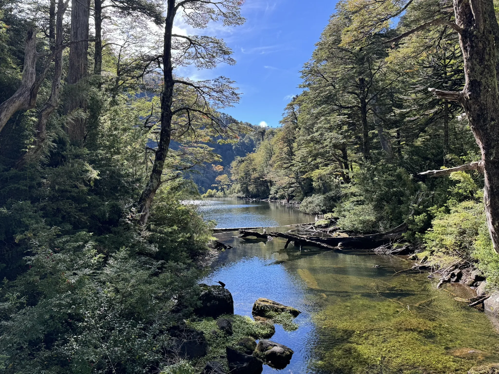
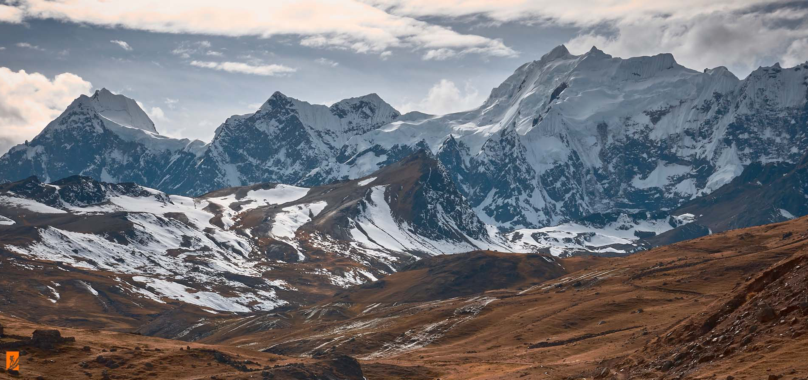
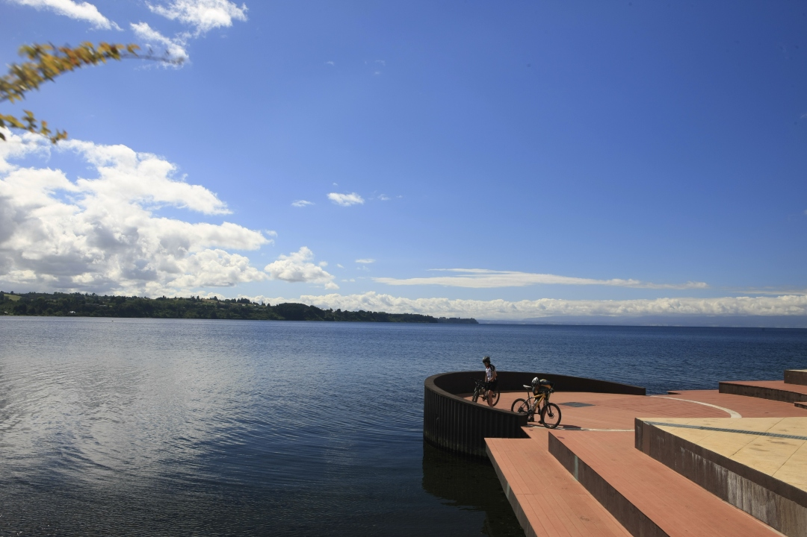
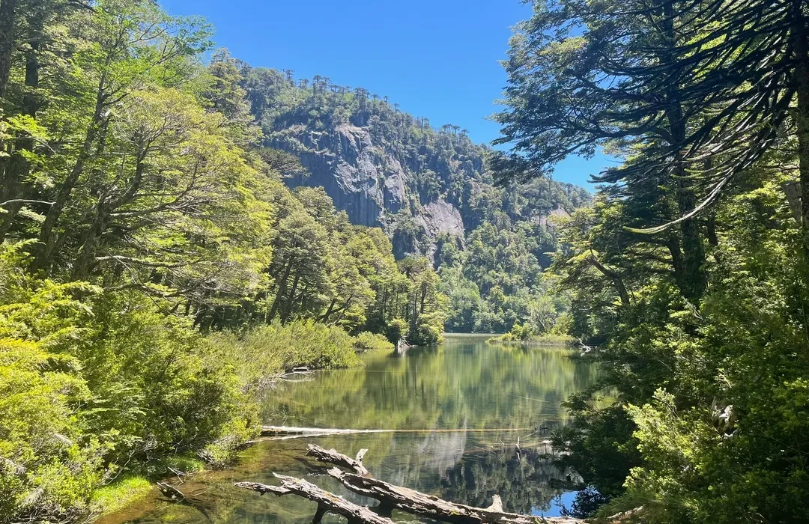
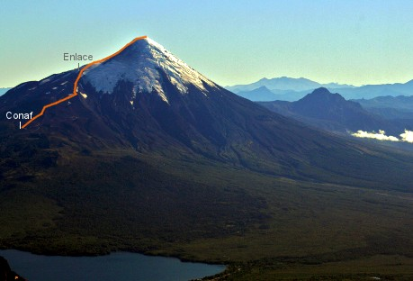
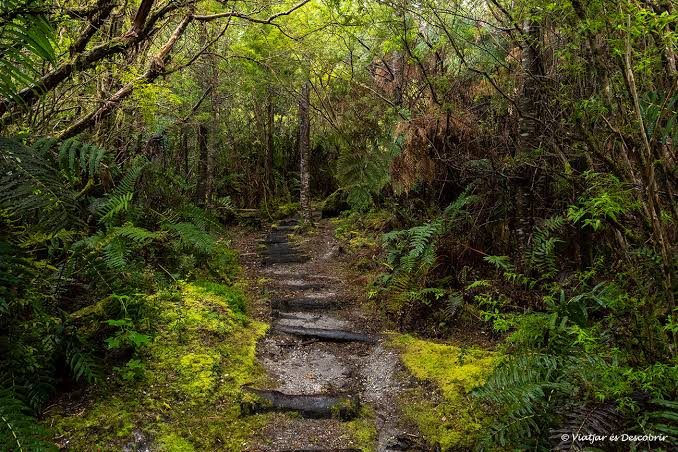

FácilBuscar rutas
Explora senderos y descubre la naturaleza de tu tierra
Buscar y filtrar rutas
Filtros avanzados
6 rutas encontradas
-
-

Difícil -

Media -

Fácil -

Difícil -

Media
No encontramos rutas
Intenta ajustar los filtros o buscar con otros términos.